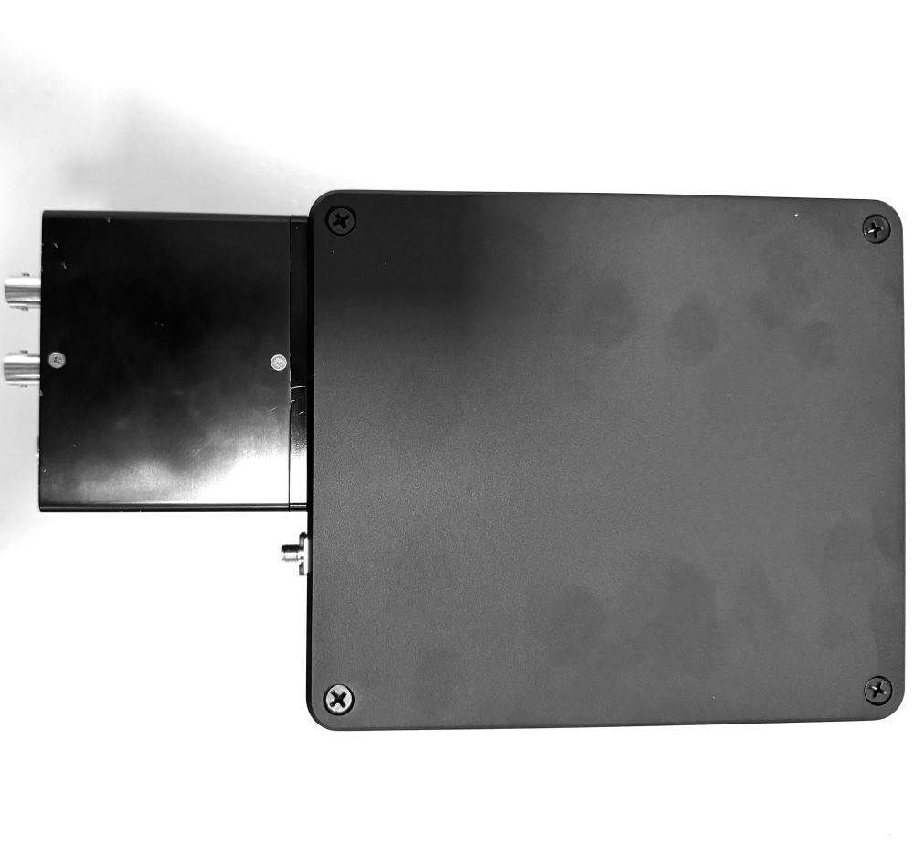
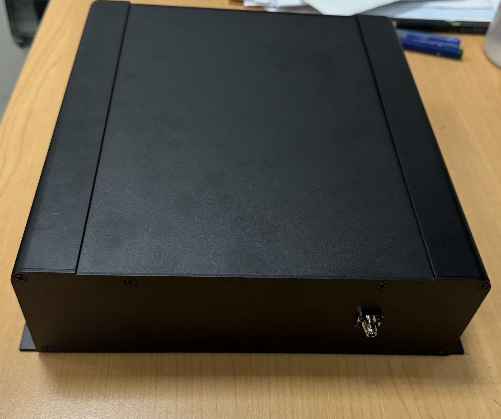
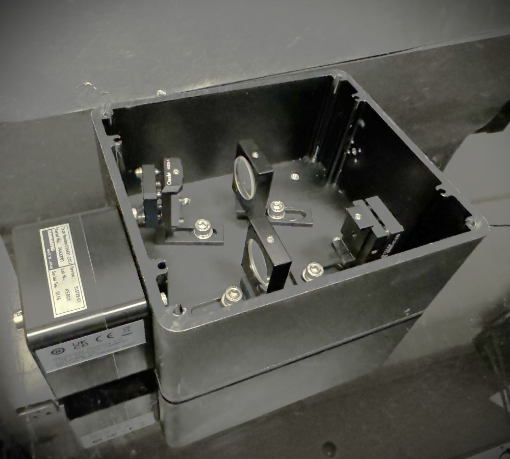
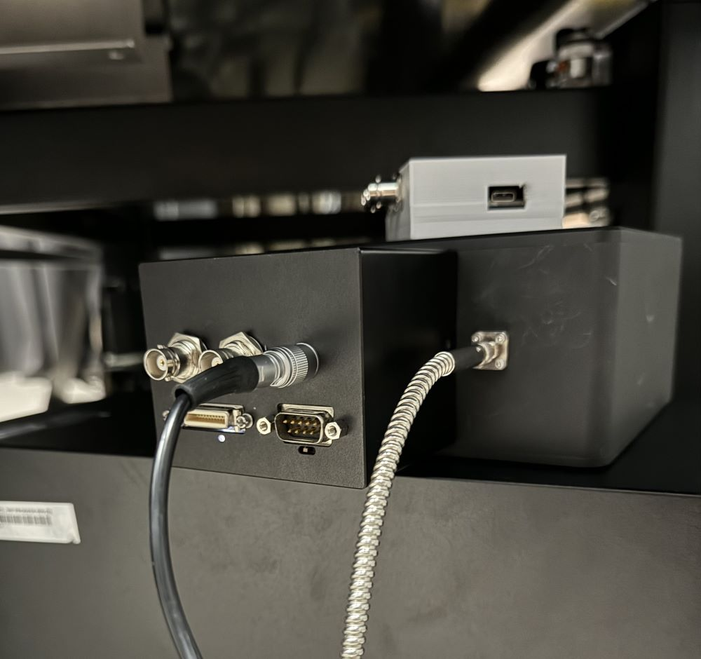
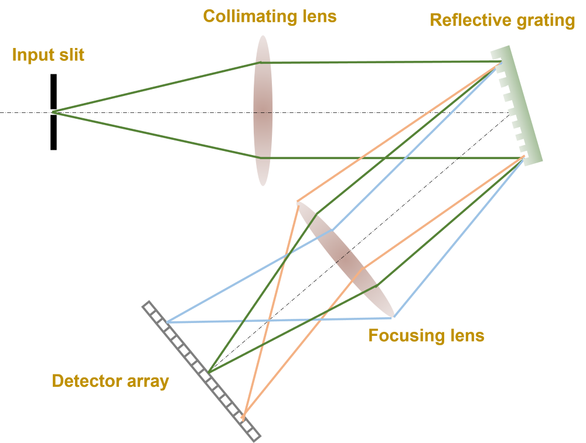
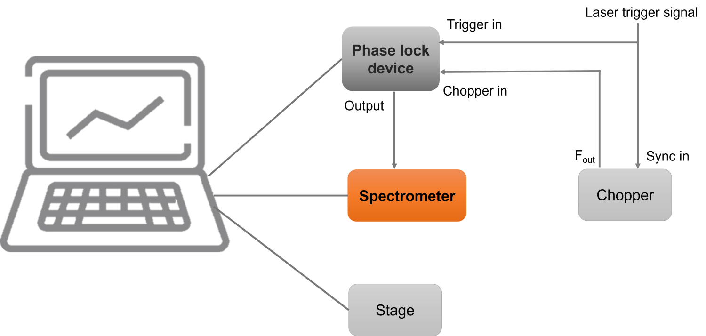
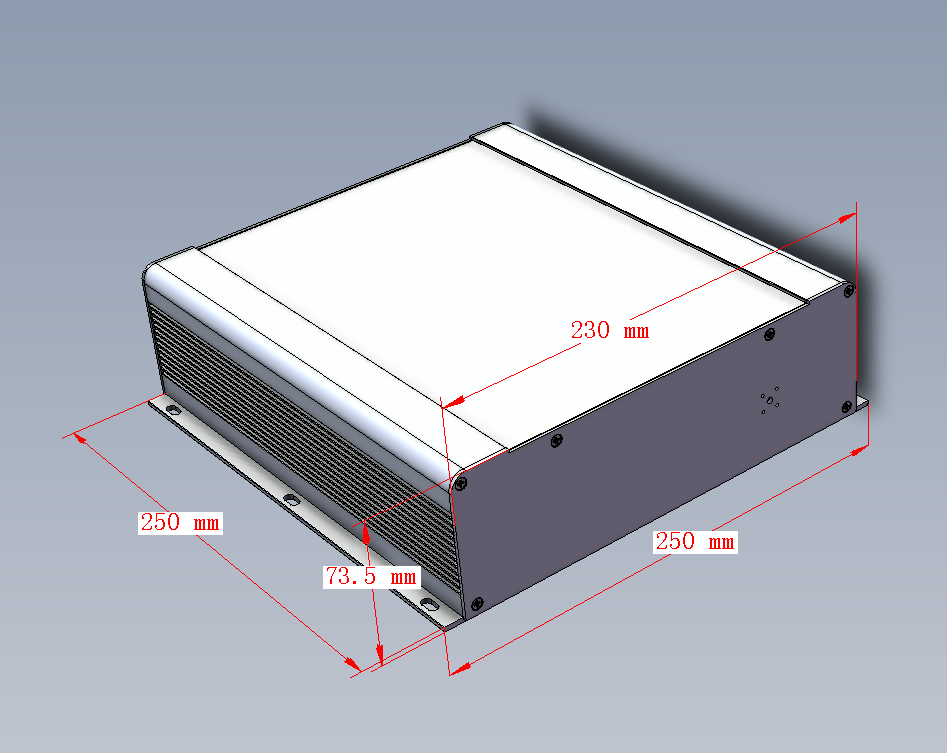

PulsearSpec
menu




Designed for pump-probe experiments, covering UV, visible and NIR with high collection efficiency and sensitivity.
This spectrometer is designed for transient absorption spectroscopy experiments. When triggered by our Phase Lock Device, it is easy to separate the probe spectrum with and without the pump. This device features a USB port or camera link connecting to a PC, enabling control through the LabVIEW software via this connection. The specially designed circuit board is optimized for high-speed processing. It offers up to 16-bit A/D resolution with a 10 M/s clock, and line rates up to 70 kHz (Visible Ultra, 12-bit). Its low-power design also keeps heat generation to a minimum.

Spectrometer design
The spectrometer is well suited for transient absorption spectroscopy and experiments employing pump-probe techniques, including 2D Electronic Spectroscopy (2D ES), Transient Absorption Imaging (TAM). It reliably distinguishes between probe spectra in the presence or absence of pump pulses. Additionally, we offer a LabVIEW subVI for straightforward integration with your existing LabVIEW control software, making it easy to add to existing setups.


| Name | Visible | Visible Fast | Visible Ultra | NIR |
|---|---|---|---|---|
| Detector (Hamamatsu) | S11639 | S12198-512 | S15729 | G10768 |
| Spectral range | 310-950 nm | 310-950 nm | 310-950 nm | 850-1600 nm |
| Pixel number | 2048 | 512 | 2048 | 1024 |
| Detector pixel size | 14 × 200 µm | 25 × 500 µm | 10 × 180 µm | 25 × 25 µm |
| Line rate | 3.8 kHz (Max) | 15.2 kHz (Max) | 70 kHz (Max) | 39 kHz (Max) |
| A/D resolution | 16 bit | 16 bit | 12 bit | 16 bit |
| Grating | 600 g/mm, 500 nm | 600 g/mm, 500 nm | 600 g/mm, 500 nm | 300 g/mm, 1000 nm |
| Collection lens | 75 mm focal length | 75 mm focal length | 75 mm focal length | 100 mm focal length |
| Interface | USB 2.0 | USB 2.0 | Camera Link | Camera Link |
| Synchronization | Internal, External | Internal, External | Internal, External | Internal, External |
